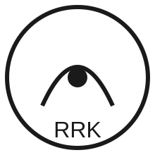

Teil des RRK‑Frameworks
Die Recursive Knowledge Cycle Theory (RKCT 4.4) ist ein Bestandteil des
übergeordneten RRK‑Frameworks (Recursive Reconstruction of Knowledge),
das auf den zehn Axiomen der RKK‑Hypothese basiert.
Die 10 Axiome der RKK‑Hypothese
- Axiom 1 – Struktur: Systeme bestehen aus stabilen, reproduzierbaren Mustern.
- Axiom 2 – Relation: Muster interagieren über gerichtete Relationen.
- Axiom 3 – Rekursion: Systeme erzeugen Strukturen, die wiederum neue Strukturen erzeugen.
- Axiom 4 – Variation: Rekursive Prozesse erzeugen unvermeidlich Variation.
- Axiom 5 – Selektion: Nur ein Teil der Variation wird stabilisiert.
- Axiom 6 – Spannung: Stabilität erzeugt strukturelle Spannungen durch Umwelt‑ oder Systemveränderungen.
- Axiom 7 – Übergang: Überschreiten von Spannungs‑Schwellen führt zu Strukturbrüchen.
- Axiom 8 – Rekonstruktion: Nach Strukturbrüchen entstehen neue Varianten und Organisationsformen.
- Axiom 9 – Integration: Erfolgreiche Varianten werden in das System integriert und stabilisiert.
- Axiom 10 – Meta‑Rekursion: Jede Stabilisierung bildet die Grundlage für den nächsten Rekursionszyklus.